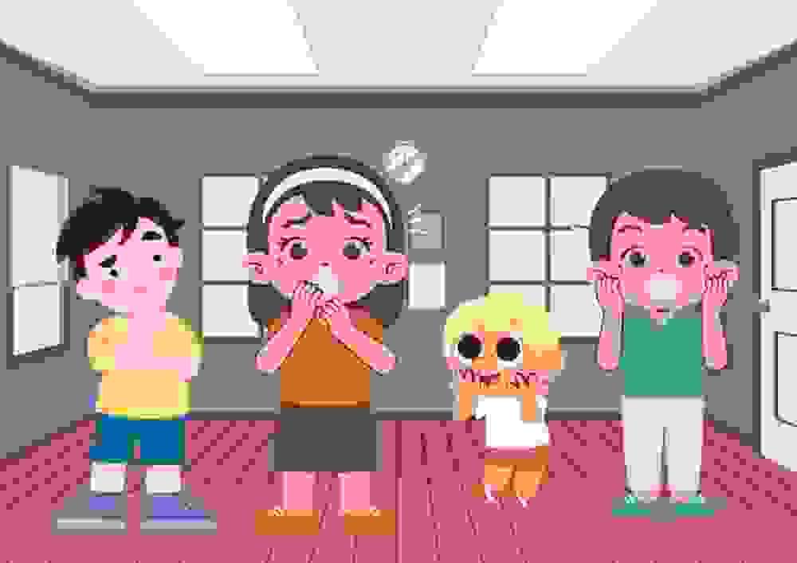

When we talk to people our facial expressions, hand gestures and body language express our strong, mild, and weak emotions. How to express the same while writing? The English language provides a solution to this crisis by offering us with an abundance of words, phrases and expressions that we can use to express our emotions succinctly in writing. We also use them in our daily conversations. They are collectively called interjections.
We must keep in mind that interjections are a grammatically independent part of speech. Thus, they can often be removed from a sentence without impacting its meaning.